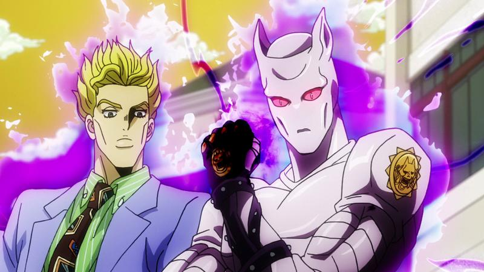

UM UNIVERSO • MUITAS REFERÊNCIAS
Você consegue ouvir
o poder?
JoJo's Bizarre Adventure mistura ação, estilo e referências musicais. Explore os nomes de Stands inspirados em artistas, bandas, músicas e álbuns reais.
Explorar referências ↗
Yoshikage Kira • Killer Queen
Referências em destaque
Stands que carregam nomes da música


Por trás de cada nome, uma música
Os nomes de muitos Stands fazem homenagem à cultura pop, especialmente à música ocidental. Há referências a rock, pop, metal, soul e outros estilos — uma mistura tão peculiar quanto o próprio anime.
“A trilha sonora não termina quando a música acaba.”— Stand Sound